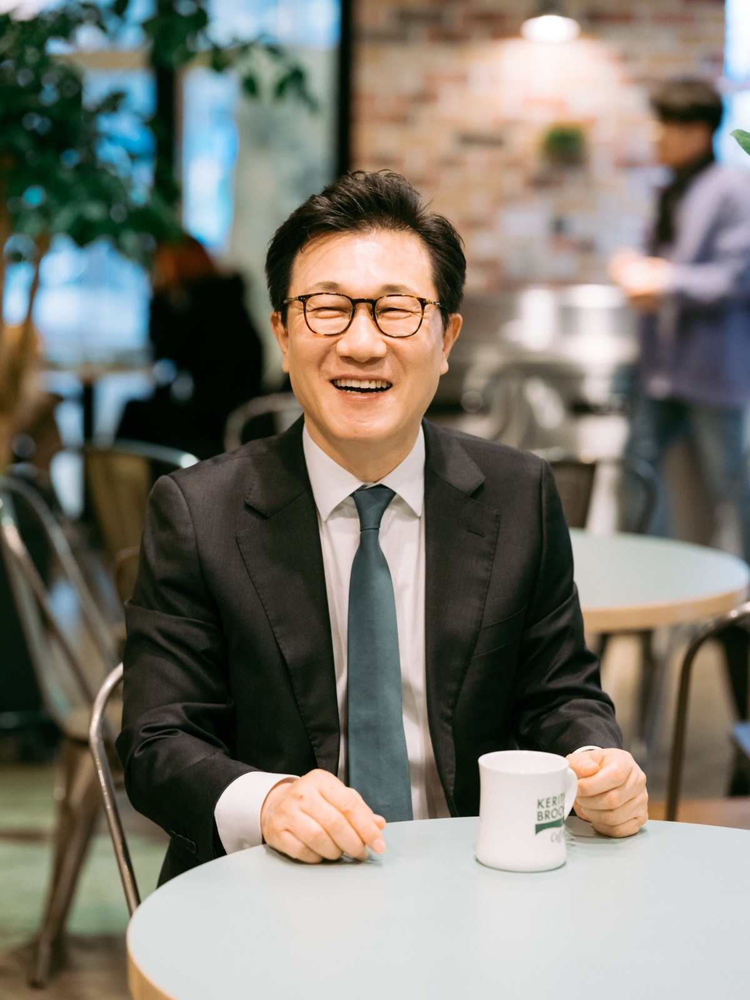

행복한 사람이 행복한 세상을 만듭니다.HANSUNG CHURCH / TOGETHER IN FAITH
YOUR NEXT STEP
예배 안내함께 예배하는 시간↗온라인 예배어디서든 함께↗이번 주 주보한성의 소식을 한눈에↗오시는 길당신을 기다리는 곳↗오늘, 무엇을 찾으세요?
HELLO, WE ARE HANSUNG
교회를 넘어,
삶을 함께하는 우리.
예수님을 만나고, 행복을 누리고, 그 행복을 나누는 곳.
한성교회는 당신의 믿음과 삶이 함께 자라는 공동체입니다.
교회를 알아보고 계신가요? 우리의 이야기와 말씀을 천천히 살펴보세요. 당신의 속도에 맞춰 함께 걸어가겠습니다.
교회의 이야기 알아보기 ↗WORDS FOR YOUR EVERYDAY
오늘을 살아갈, 말씀.
주일예배 · 2026.10.04
죽을 때 산다
요한복음 12:23–26

도원욱 담임목사한성교회 주일예배공식 설교 게시판 기준 · 2026.10.07 확인
MEET OUR PASTOR
행복을 전하는 목회,
삶에 닿는 말씀.
도원욱 담임목사는 예수 그리스도 안에서 발견한 행복을 말씀으로 나눕니다. 목회자의 이야기와 설교를 통해 한성교회를 알아가세요.
담임목사 인사말과 약력 ↗THERE IS A PLACE FOR YOU
함께라서, 더 좋은 일상.
모든 세대가 함께 자라는 곳.
당신이 함께할 자리를 만나보세요.
공식 예배 안내 기준 · 방문 전 변경 사항을 확인해 주세요.
신앙이 없어도 예배에 참석할 수 있나요?
네, 믿음이 처음인 분도 환영합니다. 먼저 설교를 들어보거나 예배에 참여하며 교회를 알아가세요. 궁금한 점은 교회 대표전화로 문의하실 수 있습니다.
아이와 함께 가고 싶어요.
영유아부, 유치부, 취학부, 청소년부 예배가 있습니다. 위의 ‘다음 세대’ 탭에서 시간과 장소를 확인해 주세요.
주차와 방문 안내가 궁금해요.
주차 가능 여부와 현장 안내는 교회 사무실(02-2603-7200)로 문의해 주세요. 방문 전 공식 오시는 길도 확인하실 수 있습니다.
우리 여기서 만나요
서울 양천구 신정로13길 21
HANSUNG LIFE
우리의 이야기는 계속됩니다.
예배에서 일상으로. 한성의 소식과 나눔을 만나보세요.